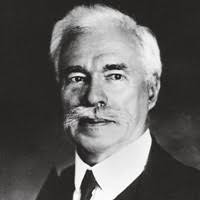

Cubism across the continent II: Russian Futurism/Suprematism
Tuesday, March 14, 2023
Lecture recording (first half)
Lecture recording (second half)
A quick recap: By 1912, Picasso and Braque had pushed Cubism to its limits.
Picasso - Guitar - 1912
Picasso - Guitar, Sheet Music, and Wine Glass - 1912
Georges Braque - Still life with Guitar - 1912
The experimentation that took them through synthetic cubism, collage, and construction brought them to a kind of cul-de-sac. As Picasso & Braque reverted to more conventional styles, and as their peers followed their work by developing different strains of painting and sculpture, both abstract and figurative, artists in Eastern Europe would do much to build on and advance the line of experimentation Cubism started.
For artists in Moscow and (present-day) St Petersburg, the Paris art scene was relatively remote, however, the Shchukin Gallery did a lot to bring it to Moscow.

Sergei Shchukin
Shchukin collection, Moscow
Russian Icons (medieval era religious paintings)
A different art historical precedent for the region. Note the composition of flat colours and shapes.
Andrei Rublev - Trinity - ca 1410-30
Natalia Goncharova - Orange Seller - 1916
Modernity in Eastern Europe: A new art for a new subject for a new society
If the Western experience of modernity was shaped by the "shock" of rapid urbanization, industrialization, and technological change—that is, by the manifestations of capitalist development—Russian modernism was shaped by the societal transformations surrounding the Revolution of 1917-23.
That meant much more emphasis on rejecting older, bourgeois notions of art, combined with attempts to create art forms that would play an active role in constructing a new society. This made for art that was much more formal in both method and style.
Russian modernism was also tuned into linguistic and literary theory (so called Russian Formalism), which was concerned with the construction of meaning through signs.
The "crisis in representation signaled by Cubism... had revealed a truth about "bourgeois" art, both academic and avant-garde, to which the (Duchamp and Vladimir Tatlin - more on him later) were also responding-that it was presumed to be autonomous, separate from social life, an instituion in its own right.... Once valued as the sign of artistic freedom, according to (theorist Peter Burger), this autonomy had become the mark of its "social ineffectuality," and this in turn prompted "the self-critique of art" advanced paradigmatically by Duchamp and Tatlin.
"Right from the start, the issue at stake [for Russian Formalists, such as Roman Jakobson and Viktor Shklovsky] seems to have been: "What is it that makes a work literary; what is literariness as such?"
(We can likewise ask what makes and artwork art?)
The question was polemical, directed against almost any trend of
literary studies at the time: against the Symbolists, for whom the
text was a transparent vehicle for a transcendent image; against the
positivists and the psychologists, for whom the biography of tbe
writer or his putative intention were the determining factors; and against the sociologists, for whom the truth of a literary text was to be found in the historical context of its formation and the political·ideological content it conveyed. For the Formalists, the literariness of a text was a product of its structure, from the phonetical level to the syntactic, from the microsemantic unit of the word to that of the plot. The literary text to them was an organized whole, whose elements
and devices had first to be analyzed, almost in a chemical fashion
(" isolated and laid bare just as they are in a Cubist painting," as
Jakobson wrote) befo re anything could be said of its signification." ...
The real source of this parallel was the belief on the part of painter
and critic alike in the power of art to renew perception. For the Formalist critic this meant showing how an author's use of language differs from our ordinary use, how commonsense language is "made strange" within the text; Shklovsky called such a critical move one oflaying bare the aesthetic "device." For the painter this
meant "de-automatizing" vision so as to confront the viewer with
the fact that pictorial signs are not transparent to their referents
but have an existence of their own, that they are "palpable," as
Jakobson would say.
Art Since 1900 - 130-131
Malevich, Russian Futurism, and Suprematism
Kazimir Malevich was among the eminent leaders of Russian modernism and of abstraction more generally. Over the first half of the 1910s he developed a Cubo-Futurist style into a style of pure non-objective art (abstraction divorced from any worldly reference points).
Kazimir Malevich - Morning in the Village After the Snowstorm - 1911
Kazimir Malevich - Head of a Peasant Girl - 1913
Kazimir Malevich - Warrior of the First Division - 1914
Kazimir Malevich - Composition with Mona Lisa - 1915
One of the nicer things about Russian modernism is that it places more emphasis on gender equality than pretty much any other major movement of this time.
Olga Rozanova - Metronome - 1915
Liubov Popova - Objects from a Dyers Shop - 1914
Popova - The Pianist - 1914
Liubov Popova - Birsk - 1916
The Zero-Degree of Painting
The founding moment of Suprematism occurred in December 1915, at the "0.10" exhibition in Petrograd (subtitled "The Last Futurist Exhibition of Paintings," the show owes its name to the fact that its ten participants-including Vladimir Tatlin, who showed his first corner counter-reli ef th ere- were all seeking to determine the "zero degree," the irreducible core, the essential minimum of painting or of sculpture).
Suprematism
A term coined by Russian artist Kazimir Malevich in 1915 to describe a new mode of abstract painting that abandoned all reference to the outside world. His new style claimed "the supremacy of pure feeling or perception in the pictorial arts" and rejected the deliberate illusions of representational painting. Using the basic components of painting’s language—color, line, and brushwork—he constructed a visual vocabulary of colored geometric shapes floating against white backgrounds, which he felt mapped the boundless space of the ideal.
Kazimir Malevich - Suprematist Composition (White on White) - 1918
Rayonism
A movement led by Mikhail Larinov and Natalia Goncharova (though the latter also worked in other styles)
Mikhail Larinov - Glass - 1912
Mikhail Larinov - Street with Lanterns - 1913
Mikhail Larinov - Street with Lanterns - 1913
Natalia Goncharova - Rayonist Composition - 1913
Natalia Goncharova - Rayonist Composition - 1913
From Cubist Construction to Constructivism
Constructivism was a particularly austere branch of abstract art founded by Vladimir Tatlin and Alexander Rodchenko in Russia around 1915
The constructivists believed art should directly reflect the modern industrial world. Vladimir Tatlin was crucially influenced by Pablo Picasso’s cubist constructions (Construction 1914) which he saw in Picasso’s studio in Paris in 1913. These were three-dimensional still lifes made of scrap materials. Tatlin began to make his own but they were completely abstract and made of industrial materials.
By 1921 Russian artists who followed Tatlin’s ideas were calling themselves constructivists and in 1923 a manifesto was published in their magazine Lef:
The material formation of the object is to be substituted for its aesthetic combination. The object is to be treated as a whole and thus will be of no discernible ‘style’ but simply a product of an industrial order like a car, an aeroplane and such like. Constructivism is a purely technical mastery and organisation of materials.
Constructivism was suppressed in Russia in the 1920s but was brought to the West by Naum Gabo and his brother Antoine Pevsner and has been a major influence on modern sculpture.
Tatlin is already on the threshold of Constructivism. The frame remains, but the materials are no longer composed pictorially. An iron triangle projects into space, in contrast with a wooden rod set at an angle in the stucco surface; below and above are two further juxtapositions of curved metal and cut glass. Selection has the character of a demonstration: it first lists its materials, then allows intrinsic properties to suggest appropriate forms. "The material dictates the forms, and not the opposite," critic Nikolai Tarabukin wrote in a 1916 definition of Constructivism based on such works. "Wood, metal, glass, etc. impose different constructions." For Tatlin, machined wood was square and planar, and so suggested rectilinear forms; metal could be cut and bent, and so suggested curvilinear forms; glass was somewhere in between, with a transparency that might also mediate between interior and exterior surfaces. How different this materialism is from the ambiguity of Cubist constructions! Far from the "arbitrary," Tatlin sought to make his constructions "necessary" through this "truth to materials," an ur-modernist aesthetic that tended also to be an ethics and, after the Russian Revolution, a politics as well.
Art Since 1900, 126
Vladimir Tatlin - Selection of Materials - Iron, Stucco, Glass, Asphalt - 1914 (hover)
"What happened from the social aspect in 1917," (Vladimir) Tatlin wrote, "was realized in our work as pictorial artists in 1914, when 'materials, volume, and construction' were accepted as our foundations." Such materialist foundations were achieved in Constructivist art, Tatlin implies, before they were established in Communist society.
Art Since 1900, 125
After 1914 Tatlin adopted the term "counter-relief," as if to
signal a dialectical advance in his constructions: just as the first
"painterly reliefs" exceeded painting, so the new "counter-reliefs,"
which extended from the wall, exceeded the painterly reliefs.
Sometimes these counter-reliefs were suspended across corners
with axial wires and rods [3). These "corner counter-reliefs" were
complex constructions of metal planes, squared and curved, per pendicular and angular. Not painting, sculpture, or architecture, they were "counters" to all three arts that activated materials, spaces, and viewers in new ways. First shown in December 1915 at
"0.10: The Last Futurist Exhibition of Paintings" in Petrograd
(once St. Petersburg, soon to be Leningrad), where Tatlin vied
with Kazimir Malevich for leadership of the Russian avant-garde,
the counter-reliefs drew young artists into the experimental
("laboratory") phase of Constructivism. If the painterly reliefs
advanced the Constructivist notion of faktura, which, in contra-
distinction to Western "facture", stressed the mechanical aspect of
the painterly mark rather than its subjective side, the counter-
reliefs advanced the Constructivist notion of construction, which,
in opposition to Western "composition," stressed active engage-
ment with art rather than contemplative reflection of it. Yet to be
developed was the third notion of Constructivism, tectonics, the
dialectical connection of Constructivist formal experimentation
with Communist principles of socioeconomic organization, but
this most difficult step in the Constructivist program had to await
the Revolution.
Art Since 1900, 126
Vladimir Tatlin - Corner Counter-Relief - 1914 (hover)
These "corner counter-reliefs" were complex constructions of metal planes, squared and curved, perpendicular and angular. Not painting, sculpture, or architecture, they were "counters" to all three arts that activated materials,spaces, and viewers in new ways.
Art Since 1900, 127
From Formal Experimentation to Revolutionary Engagement
Alexander Rodchenko - Dance - An Objectless Composition - 1915
Alexander Rodchenko - Spatial Construction no. 12 - 1920
Alexander Rodchenko - Cover of “Pro Eto” by Vladimir Mayakovsky - 1923 / Poster “Books (Please)! In all branches of knowledge” - 1924
Varvara Stepanova - Billiard Players - 1920
Varvara Stepanova - Sportswear Designs - 1923
Varvara Stepanova - Textile Design - 1924
Varvara Stepanova - The Results of the First Five-Year Plan - 1932
Russia was also at the forefront of early cinema, producing some of the most advanced works and theories of cinema.


 - 1916-17.jpg)